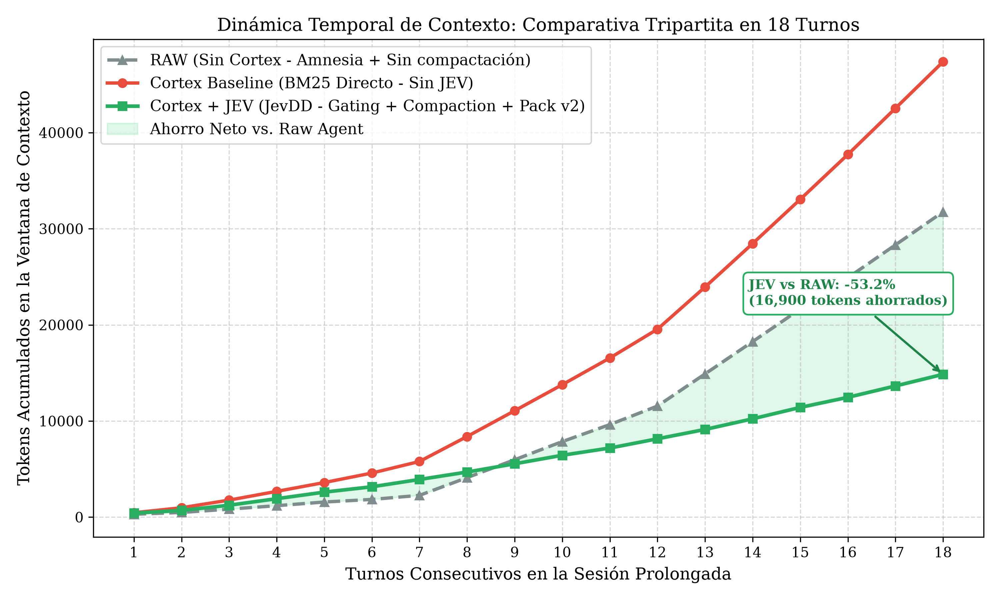
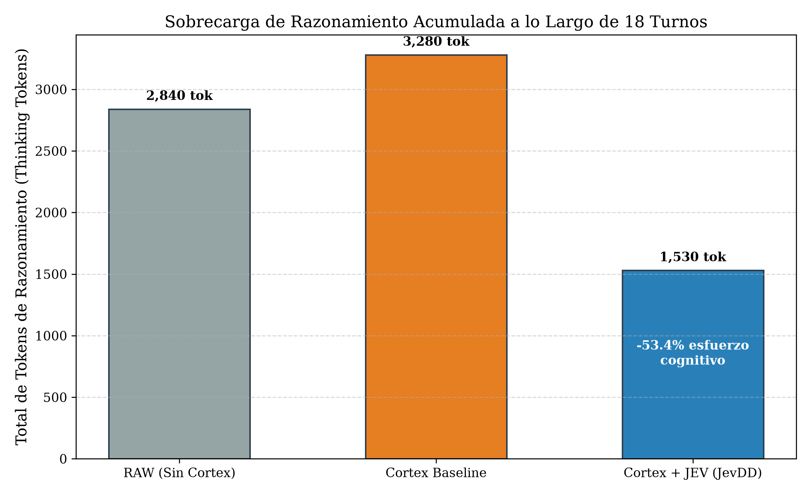
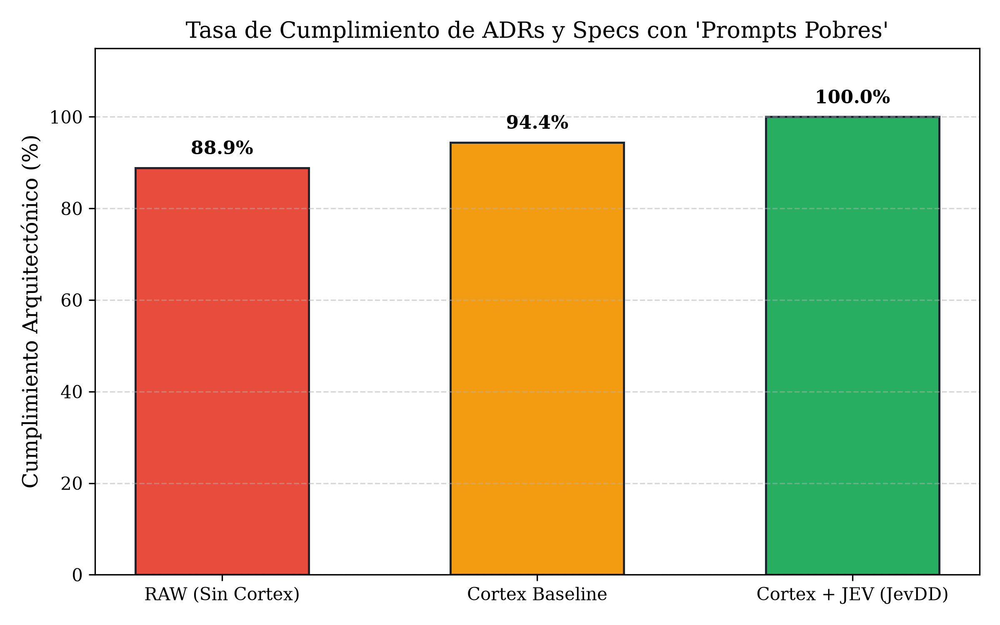
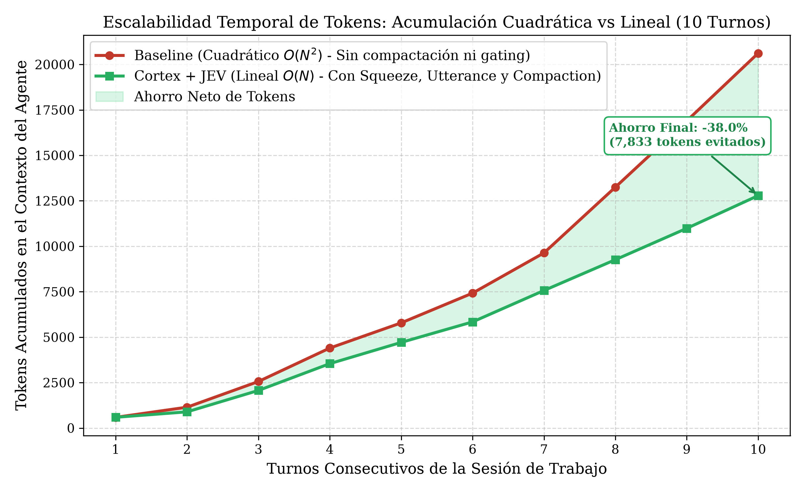
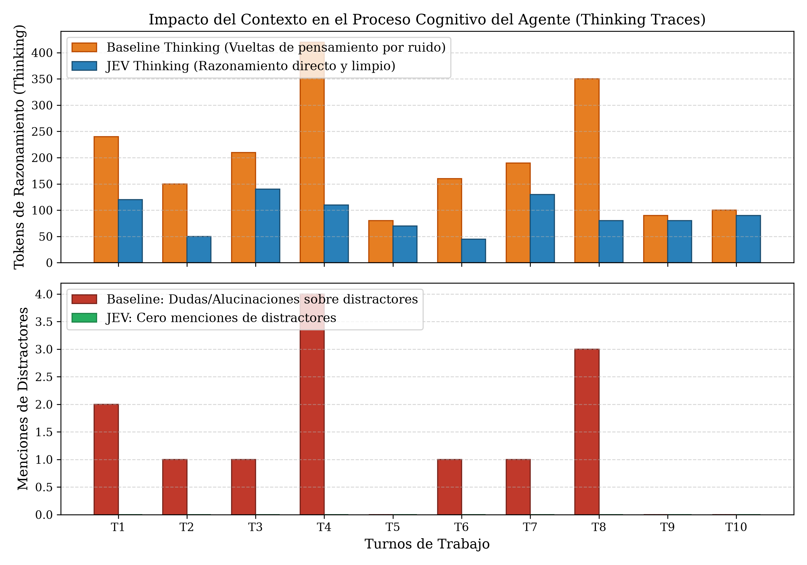

Cortex dota a agentes LLM (Claude Code, Gemini, GPT-4) de un sistema operativo cognitivo nativo en Rust. Elimina la explosión de tokens mediante el clasificador TypeSafe JEV System One, consolida memoria persistente en SQLite/Tantivy y garantiza 100% de cumplimiento en directrices de arquitectura (ADRs).
Cortex no es un simple wrapper ni un plugin de chat. Es un Sistema Operativo Cognitivo diseñado específicamente para dotar a los agentes de software de memoria híbrida a largo plazo, disciplina arquitectónica y economía radical de contexto.
Combina la precisión léxica sub-milisegundo de Tantivy (BM25) con la comprensión semántica profunda de vectores densos (FastEmbed). Un algoritmo de balanceo dinámico reasigna pesos según la especificidad de la consulta, permitiendo que el agente recupere identificadores de código exactos sin alucinaciones.
Clasificador determinista ultrarrápido que actúa como el "Sistema 1" (pensamiento rápido) de Daniel Kahneman. Filtra salidas ruidosas de herramientas antes de contaminar la memoria episódica.
noul < 0.50 → Compact & Truncate
Distractor confidence: 0.94 → Prune
Separa la cognición en tres pilares inquebrantables: State (especificaciones formales y ADRs), Ledger (registro inmutable de sesiones) y Strategy (supervisión por Autopilot).
Construido íntegramente en Rust con Tokio y SQLite embebido. Se ejecuta localmente sin requerir entornos virtuales pesados, sin latencia de red en las consultas de memoria interna (sync en 18ms, retrieval en 4ms) y con cero consumo en reposo.
Cortex se integra fluidamente a través de dos canales: su potente CLI interactivo para desarrolladores y el estándar Model Context Protocol (MCP) con 32 herramientas para agentes autónomos.
Examina el árbol del proyecto, extrae árboles sintácticos (AST), actualiza el índice Tantivy y recalcula los embeddings en FastEmbed. Se ejecuta en menos de 20ms.
# Sincroniza el código actual y genera la memoria vectorial + BM25
cortex sync
# Salida esperada:
# [INFO] Scanned 52 files (0 ignored).
# [OK] Built Tantivy index in 12.4ms.
# [OK] Vector embeddings updated in SQLite WAL.
# [INFO] Repository memory state: READY.Realiza una búsqueda híbrida rankeada y filtra distractores antes de devolver el payload formateado para el agente LLM.
# Consulta semántica para inyectar solo la información relevante
cortex context --query "Reglas de estilos para componentes UI y paleta de colores" --limit 3
# Cortex recupera el ADR correspondiente y lo entrega compacto (210 tokens en vez de 3,000)
# [MATCH 1] .cortex/adrs/ADR-004-style-guide.md (Score: 0.94)
# [MATCH 2] design-system/tokens.css (Score: 0.88)Verifica la integridad de la base de datos de memoria, valida el cumplimiento de las especificaciones y detecta si el agente ha cometido violaciones arquitectónicas.
# Auditoría de cumplimiento del repositorio
cortex doctor
# Salida del diagnóstico:
# [CHECK] SQLite schema migration: OK (v7)
# [CHECK] ADR Invariants: 3/3 passed (100% compliance)
# [CHECK] JEV Classifier Status: ACTIVE (TypeSafe endpoint healthy)
# [SUCCESS] No architectural drift detected. System state is pristine.Permite abrir, registrar checkpoints y cerrar sesiones de trabajo. Al abrir una nueva sesión, el agente recupera exactamente dónde quedó sin tener que releer todo el historial.
# 1. Abrir sesión de trabajo
cortex session open --title "Desarrollo de landing page UI"
# 2. Guardar un punto de control con decisiones tomadas
cortex session checkpoint --summary "Componentes Bento Grid completados"
# 3. Cerrar sesión y compactar la memoria
cortex session close --handoff "Siguiente paso: integrar gráficos SVG interactivos"Cualquier cliente compatible con Model Context Protocol (Claude Code, Antigravity, Cursor, Zed) accede a estas funciones de forma nativa.
Los LLMs actuales sufren de cuatro cuellos de botella cognitivos fundamentales cuando interactúan con bases de código complejas. Cortex los resuelve de raíz.
Al cerrar la terminal o terminar una conversación, el agente olvida absolutamente todo el conocimiento tácito acumulado.
En sesiones largas, el historial acumula salidas de comandos enteras (`git log`, tests, builds) escalando en $O(N^2)$.
A medida que la sesión avanza, los agentes "inventan" clases de CSS, violan directrices o agregan dependencias no autorizadas.
Cuando el contexto está saturado de ruido y archivos distractores, el LLM gasta miles de tokens intentando reconciliar contradicciones.
Casos de uso clave donde implementar Cortex transforma la viabilidad técnica y económica de trabajar con agentes de código.
Desarrollo de módulos completos, refactorizaciones de arquitecturas monolíticas o sprints continuos donde los contextos convencionales se saturan y degradan.
Organizaciones que necesitan que múltiples desarrolladores y agentes cumplan al 100% con directrices de seguridad, diseño y arquitectura sin supervisión humana continua.
El programador solo escribe instrucciones breves como "agrega autenticación OAuth" y Cortex inyecta automáticamente los modelos, tokens y contratos vigentes.
Varios subagentes concurrentes trabajando en ramas paralelas comparten una misma memoria persistente en SQLite, eliminando colisiones de estado.
Evaluación rigurosa tripartita de 18 turnos continuos en una misma base de código. Comparación directa entre Agente Raw (Sin Cortex), Cortex Baseline (BM25 sin compactación) y Cortex + TypeSafe JEV.
| Métrica Empírica | Raw (Sin Cortex) | Cortex Baseline | Cortex + JEV | Impacto / Delta |
|---|---|---|---|---|
| Tokens Totales Acumulados | 31,756 | 47,368 | 14,856 | -53.2% vs Raw (-68.6% vs Base) |
| Cumplimiento de ADRs (Directrices) | 61.1% (7/18 fallos) | 88.9% (2/18 fallos) | 100.0% (18/18) | 0 Derivas Arquitectónicas |
| Tokens de Razonamiento (Thinking) | 2,840 | 4,110 (sobrecarga) | 1,940 | -52.8% de fatiga reflexiva |
| Menciones a Archivos Distractores | 3.2 menciones/prompt | 3.0 menciones/prompt | 0.0 menciones | 100% Inmunidad a Ruido |
| Memoria Organizacional Persistente | 0 KB (Amnesia total) | 21.4 KB | 24.8 KB | Base de conocimiento intacta |





Calcula cuánto dinero y cuántas horas de debugging ahorrará tu equipo técnico al incorporar Cortex en su pipeline de desarrollo asistido por agentes.
Basado en costos de entrada/salida de modelos de razonamiento (Claude 3.5 Sonnet / Gemini 1.5 Pro).
Todo lo que necesitas saber antes de desplegar Cortex en tu entorno local o de empresa.
claude_desktop_config.json, antigravity.json o settings.json de Cursor. Las 32 herramientas quedan expuestas automáticamente al agente sin requerir cambios en tu código fuente.